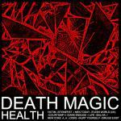
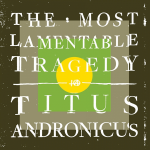

Music Reviews
-

Sleaford Mods Key Markets
Sleaford Mods are as brilliant and vital at what they do as they've ever been, on their most overtly political record yet.
Stephen Wragg reviews... -
Chelsea Wolfe Abyss
Chelsea Wolfe's latest album takes the crushing, panic-inducing feeling of sleep paralysis and turns it into a haunted album of doom, the heaviest in her career.
Joe Marvilli sinks into the abyss... -

Georgia Georgia
Georgia's lively self-titled is a fine blend of rhythmic eccentricity under a pop guise, seeking new ways to rewrite accessible song patterns with a decidedly forward-thinking thrust.
Juan Edgardo Rodríguez reviews... -

Stern Bone Turquoise
On the cusp of avant-garde abstraction and melodic accessibility, Stern's "alien pop" expansively mines a bleak and beautifully twisted sonic landscape for angularly anxious sounds of doom metal shrinking into slowcore and early psychedelic music.
Grant Phipps listens into the musical sinews of another galaxy... -

Ashley Monroe The Blade
Ashley Monroe just keeps getting better with every heartbreak.
Luiza Lodder likes what she hears... -

Iron And Wine & Ben Bridwell Sing Into My Mouth
Two titans of indie rock join forces for a full-length collaborative debut and series of live dates. Music aside, the name on the billing gets a 1 out of 10. Why not Band of Bearded Horses or Kiss Each Other Clean All The Time? Music included, it's a case of what should have been.
Ben Jones reviews... -

HEALTH Death Magic
The Los Angeles noise makers return with their first full-length in six years, a more accessible offering in which they make themselves more vulnerable by approaching feeling with a more synthetic bent.
Juan Edgardo Rodríguez revews... -

Titus Andronicus The Most Lamentable Tragedy
With their fourth album, The Most Lamentable Tragedy, Titus Andronicus stretches that style to its limits, a 93-minute, 29-song rock opera chronicling its narrator’s struggle with mental illness.
Brad Hanford reviews... -
Miguel Wildheart
The LA vocalist refuses to take the easy way out on his first record for three years.
Joe Rivers reviews... -

Tame Impala Currents
Currents is the epitome of Kevin Parker’s ability to render a serenely beautiful image over a much darker proposition, and a celebration of his incredible prowess in a recording studio. The paranoia, withdrawal and isolation that until now have been the cornerstones of Tame Impala's sound take a back seat, with Parker sculpting over a canvas more suited to his current psyche.
Carl Purvis is in awe...